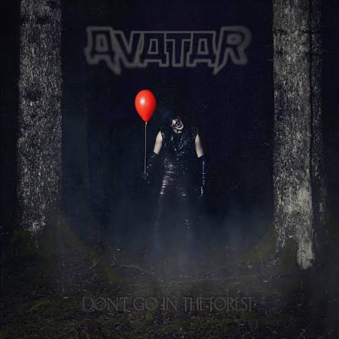
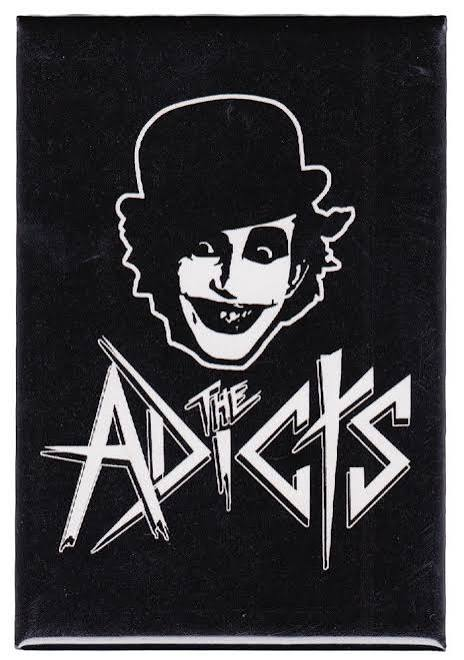
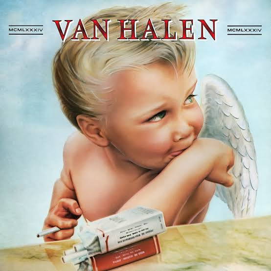
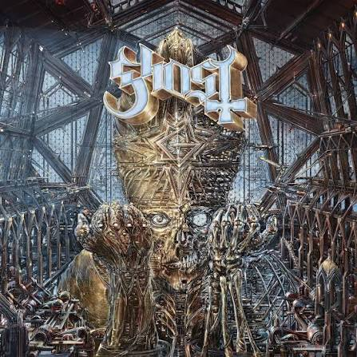
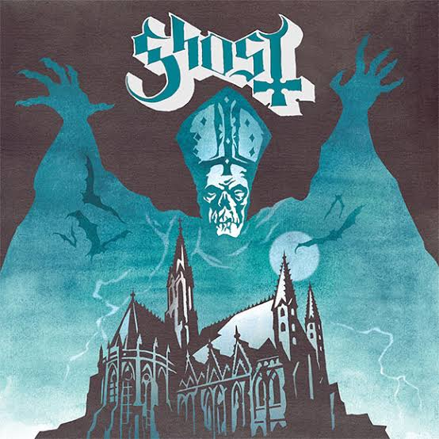
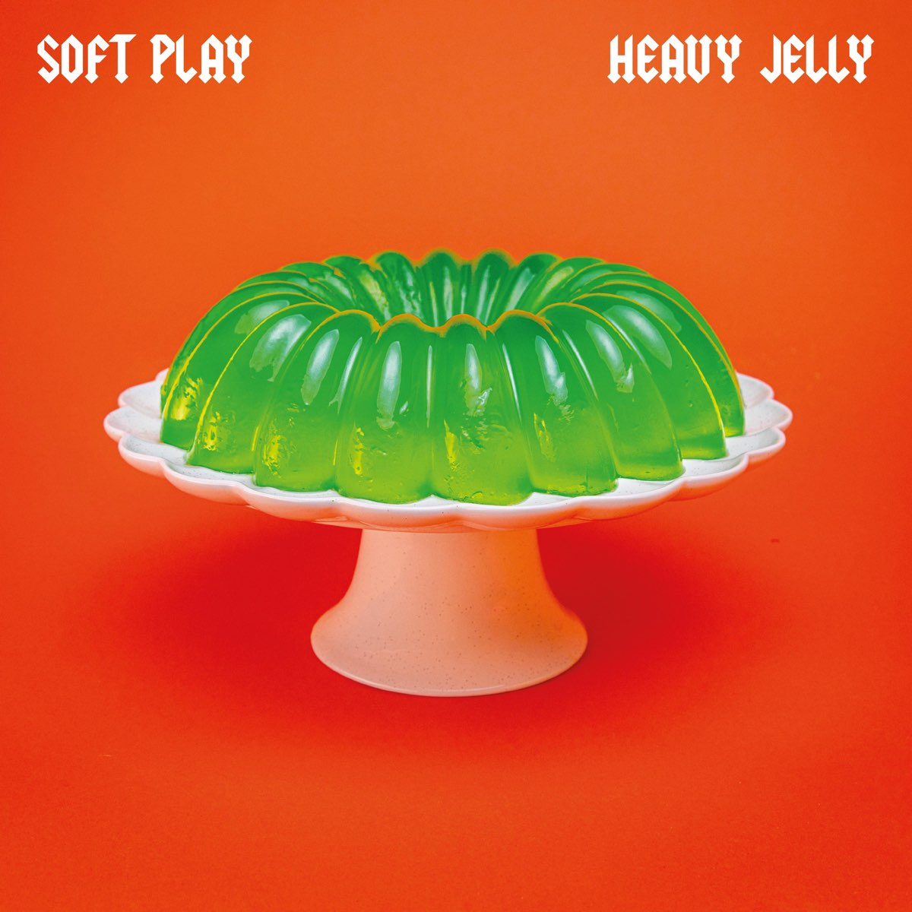
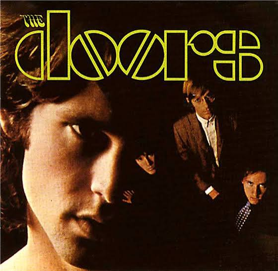
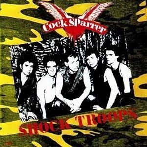
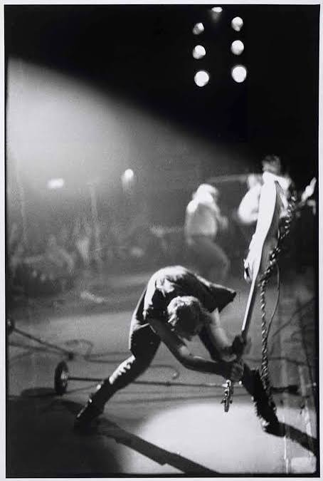

LONDON CALLING!
London calling to the faraway towns
Now war is declared and battle come down
London calling to the underworld
Come out of the cupboard, you boys and girls
London calling, now don't look to us
Phony Beatlemania has bitten the dust
London calling, see we ain't got no swing
'Cept for the ring of that truncheon thing
The ice age is coming, the Sun's zooming in
Meltdown expected, the wheat is growing thin
Engines stop running, but I have no fear
Cause London is drowning, and I live by the river
London calling to the imitation zone
Forget it, brother, you can go it alone
London calling to the zombies of death
Quit holding out and draw another breath
London calling and I don't wanna shout
But while we were talking I saw you nodding out
London calling, see we ain't got no high
Except for that one with the yellowy eyes
The ice age is coming, the Sun's zooming in
Engines stop running, the wheat is growing thin
A nuclear error, but I have no fear
Cause London is drowning and I, I live by the river
The ice age is coming, the Sun's zooming in
Engines stop running, the wheat is growing thin
A nuclear error, but I have no fear
Cause London is drowning and I, I live by the river
Now get this
London calling, yes, I was there too
And you know what they said? Well some of it was true
London calling at the top of the dial
And after all this, won't you give me a smile?
London calling
I never felt so much a'like, a'like, a'like
Escrita por: Joe Strummer, Mick Jones (Gb 1), Paul Simonon, Headon Topper.